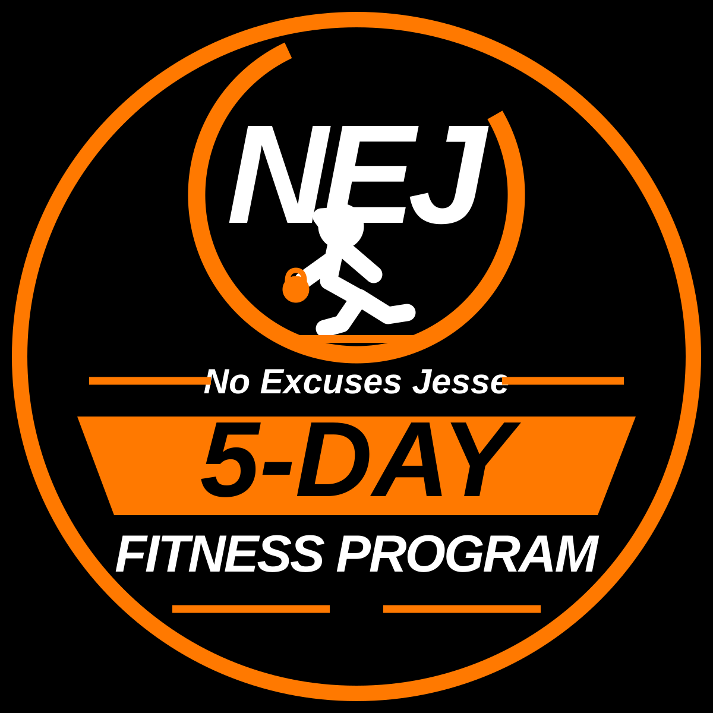
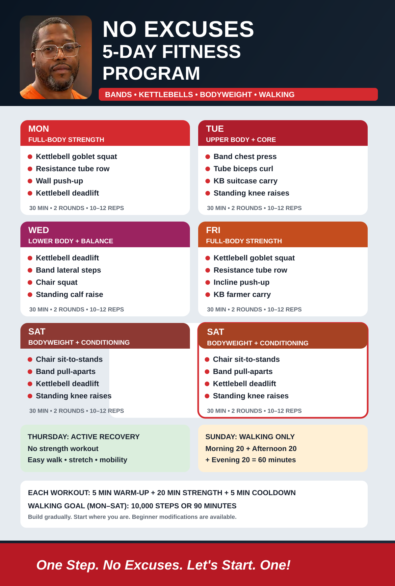

RINGCO Body Pod Scale
Track your weigh-ins and progress.
Shop on Amazon ↗
Resistance tubes and bands • Kettlebells • Bodyweight • Walking. A beginner-friendly program you can do at home.
FREE COMMUNITY PROGRAM30-min workout + walking goal
30-min workout + walking goal
30-min workout + walking goal
No strength workout; easy walking or mobility
30-min workout + walking goal
30-min workout + walking goal
20 min morning + 20 min afternoon + 20 min evening
Complete 2 rounds of each circuit. Aim for 10–12 controlled repetitions per exercise, except timed carries. Rest 30–60 seconds or longer as needed.
Monday–Saturday: Aim for 10,000 steps OR 90 minutes of walking, separate from your strength workout.
Sunday: Walk 20 minutes in the morning, afternoon, and evening at an easy pace.
These are goals, not minimum requirements. Start with a manageable amount and build gradually.
Use bodyweight modifications if you don't have an item.

I'm Jesse, the person behind No Excuses Jesse. I built this free program around practical movement, beginner-friendly strength exercises, and walking. You don't need a gym to get started. Start where you are, move at your pace, and build consistency one day at a time.
One Step. No Excuses. Let's Start. One!
Explore more free fitness resourcesLooking for equipment to support your workouts and walking routine? Here are five options you can explore. Buying equipment is optional. Start with what you have and what fits your budget.
Track your weigh-ins and progress.
Shop on Amazon ↗A compact option for strength workouts at home.
Shop on Amazon ↗An indoor walking option for your daily movement goals.
Shop on Amazon ↗Adjustable resistance for strength exercises.
Shop on Amazon ↗An option for rows, presses, curls and other movements.
Shop on Amazon ↗Affiliate disclosure: Some links may be affiliate links. I may earn a commission from qualifying purchases at no additional cost to you. Links take you to Amazon, where pricing, product details, availability, and checkout are handled.
Save the full weekly fitness infographic or download the printable workout plan, including exercise instructions, beginner options, a weekly tracker and a safety disclaimer.
All downloads are free. Adjust walking and resistance goals to your fitness level.
What workout did you complete? How many steps or walking minutes did you log? How do you feel?
The No Excuses 5-Day Fitness Program provides general exercise and wellness information for educational purposes only. It is not medical advice or an individualized fitness prescription.
Talk with a qualified healthcare professional before starting or significantly changing an exercise routine, particularly if you have a medical condition, injury, symptoms, are pregnant, or are unsure whether exercise is safe for you.
Exercise and walking involve risks, including falls, strains and other injuries. Choose appropriate weights and resistance, check equipment and band anchors, use proper technique, and adapt or skip exercises as needed. The 10,000-step / 90-minute goals are optional targets, not requirements.
Stop exercising if you experience pain, dizziness, faintness, or unusual shortness of breath. Chest pain, severe breathing difficulty, or other possible emergency symptoms require urgent medical attention; call emergency services when appropriate.
Results vary, and no particular fitness, health or weight-loss outcome is guaranteed.